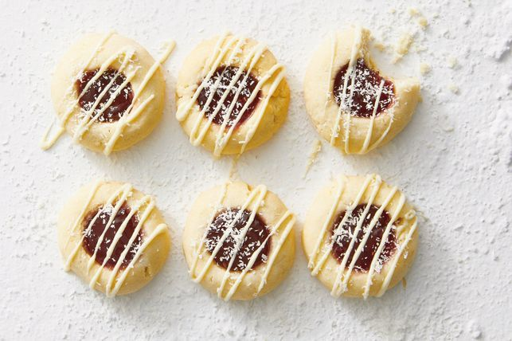

Good for a special dessert

INGREDIENTS
The true question here is,Are you ready to bake?.
- 125g cream cheese, at room temperature, chopped
- 125g unsalted butter, at room temperature, chopped
- 155g (3/4 cup) caster sugar
- 2 tsp vanilla extract
- 250g (1 2/3 cups) plain flour, plus extra, for dipping
- 155g (1/2 cup) raspberry jam
- 75g white chocolate, melted
- 2 tsp desiccated coconut
HOW TO BAKE
- Preheat oven to 160C/140C fan forced. Line 2 baking trays with baking paper. Use electric beaters to beat the cream cheese
Unsure of the quantity needed?
Click on the underlined ingredient to reveal the quantity. No need to flip back and forth!
, butter and sugar in a bowl until pale and creamy. Beat in the vanilla. Use a spatula to fold in the flour until just combined.
- Roll level tablespoonfuls of mixture into balls. Place on prepared trays. Dip your thumb in flour and use to make a 2.5cm indent in each biscuit.
Place a spoonful of jam in each indent. Bake the biscuits for 15 minutes or until light golden underneath (biscuits will still be pale on top).
Allow to cool, on trays, for 5 minutes before transferring to a wire rack to cool completely. Drizzle cookies with melted chocolate and sprinkle with coconut.
back to top
main page